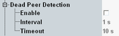

Dead Peer Detection Settings
With enabled dead peer detection, the ePDG detects and releases unused IPsec tunnels.

Dead peer detection settings
Enables dead peer detection.
Remote command:If the ePDG receives no packets via an established tunnel within the configured "Interval", the ePDG sends a message to the DUT.
If the ePDG receives no answer to this message within the configured "Timeout", it releases the IPsec tunnel.
Remote command: